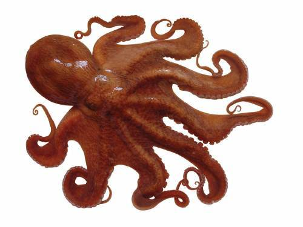

문어는 두족류에 속하는 해양 동물로, 여덟 개의 팔을 가진 것이 특징입니다. 주로 깊은 바다에서 서식하며, 뛰어난 지능과 다양한 생리적 특성을 지니고 있습니다. 학명은 Octopoda이며, 존재하는 모든 무척추 동물중 가장 똑똑합니다.
문어는 매우 유연한 몸을 가지고 있으며, 팔마다 수천 개의 흡입구가 있습니다. 또한 색소 세포를 통해 색깔을 바꾸어 위장할 수 있는 능력을 가지고 있습니다.
문어는 대부분 깊은 바다에서 서식하며, 바위 틈이나 해저에서 은신처를 찾습니다. 그들은 다양한 해양 환경에 적응할 수 있는 능력을 가집니다.
문어는 위협을 받으면 잉크를 뿜어내어 포식자를 혼란스럽게 하고, 빠르게 도망칠 수 있습니다. 또한 매우 유연하여 좁은 틈을 통해 탈출할 수 있습니다.
다양한 문어 잡기 체험을 즐기고, 직접 해양 생태계를 경험해보세요! 아래 링크에서 체험 프로그램을 확인하고 예약하세요.
문어 잡기 체험 1 문어 잡기 체험 2 문어 잡기 체험 3 문어 잡기 체험 4 문어 잡기 체험 5